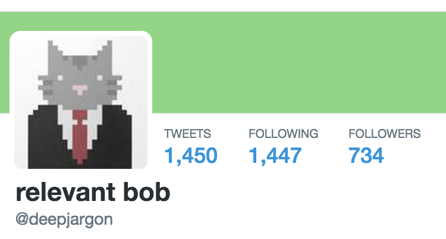

API
(Application Program Interface)
The way a program exposes functions to other programs
- Facebook Graph Api (querying facebook objects)
- Google Search Api (search results)
- Bing/Google Maps Api (locations/GPS, satellite images)
Few other common terms
- Language: Javascript, Ruby, Python, C/C++
- Package: Makes some task(s) easier
- Framework: A big, holistic package
So who's Deep Jargon?

Relevant Bob
age: < 2 weeks
What's a twitter bot?
An application that uses the Twitter Api.
How we do this??
- Make Twitter account
- Enter phone # into your profile
-
Create New App at apps.twitter.com
*just the required stuff, any full url will work for website
- 'Modify app permissions' –> read/write –> update
-
'Keys/Access Tokens' –> Create access token –> update
*keep this page open.
In the mac terminal*... (cmd + space, "terminal")
-
git clone https://github.com/maxwerr/twitter-starter.git
cd twitter-starter
Update config.js with *your* apps permissions
Update index.js queries for your idea
-
npm install
node index.js
Questions?
Get together with your teammates and get started!